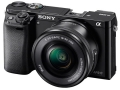
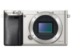
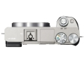
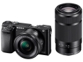
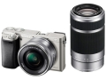
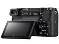
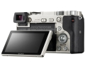

器材库 > APS及其以下画幅可换镜头数码相机 > ILCE-6000L/SCN2

规格总览
产品类型
APS画幅可换镜头数码相机
发布日期
2014-02-12
厂家推荐价格
68,000.00 （日元）
影像规格
影像传感器
Exmor APS HD CMOS
影像传感器尺寸
23.5×15.6mm
有效像素
2430万
影像处理器
BIONZ X
色彩空间
sRGB，AdobeRGB（特丽魅彩色彩技术）
最大解像度
6000x4000
静态图像尺寸
[3：2]L：6000x4000\M：4240x2832\S：3008x2000；[16：9]L：6000x3376\\M：4240x2400\S：3008x1688
静态图像格式
JPEG, RAW+JPEG
静态图像质量
精细，标准
画幅比
3:2, 16:9
短片尺寸
AVCHD：1920 x 1080（50p/50i/25p/）；MP4：1440 x1080 （25 fps）；VGA：640 x 480 （25 fps）
短片格式
MPEG4, MP4
防抖系统
镜头防抖（OSS 镜头）
镜头和对焦
镜头卡口
Sony E
兼容镜头
索尼E卡口镜头
对焦系统类型
混合自动对焦（相位侦测/对比度检测自动对焦）
对焦点
179点（相位检测自动对焦）/25 点（对比检测自动对焦）
对焦模式
自动AF，单次AF，连续AF，DMF，手动对焦
曝光控制
测光系统
1200区测光
测光模式
多分区评价测光, 点测光, 中央点测光
测光范围
0EV-20EV （ISO100， F2.8 镜头）EV
曝光模式
P（程序自动曝光）, 场景选择, A（光圈优先自动曝光）, S（快门速度优先自动曝光）, M（手动测光曝光）, 全景扫描, 智能自动, 动态影像
场景模式
夜景, 黄昏, 人像, 风景, 微距, 运动, 夜间人像, 数码防抖模式, 手持夜景
快门类型
电子控制，纵走式，焦平面快门
快门速度
1/4000秒 - 30秒，B门
闪光同步速度
1/160秒秒
曝光补偿
±5EV以1/3EV或1/2EVEV级调整
ISO感光度
100, 400, 800, 1600, 3200, 6400, 12800, 25600
白平衡
日光, 白炽灯, 闪光灯, 阴天, 荧光灯, 自定义, 阴影, 自动, 水下, 荧光灯（冷白色）, 荧光灯（日光白色）, 荧光灯（日光）, 荧光灯（暖白色）, 色温/滤光片
自拍
10秒, 2秒
连拍
最快约11张/秒（连拍模式下）
闪光灯
内置闪光灯
弹出式
闪光模式
自动, 慢速同步, 强制闪光, 遥控, 禁止闪光
闪光指数
约GN 6（ISO 100， 以米为单位）
闪光补偿
±3EV以1/3EV或1/2EVEV级调整
闪光同步模式
后帘同步
取景器/显示屏
取景器
彩色XGA OLED电子取景器
取景范围
100%
取景放大倍率
1.07倍
屈光度调节范围
-4 .0至 +3.0m-1
LCD类型
TFT LCD
LCD尺寸
3.0英寸
LCD像素
92万
视野率
100%
LCD特性
翻转屏
亮度调节级数
手动（±2.0级）/晴朗天气
Live View
有
Live View 显示
图形显示，显示全部信息，无显示信息、柱状图、取景器
文件输入/输出
存储卡
MS/MS PRO记忆棒, SD/SDHC, SDXC
数据接口
USB2.0
视频/音频接口
HDMI Mini 输出
无线功能
Wi-Fi, NFC
电源
电池
可重复充电电池NP-FW50
续航能力
约310张（取景器），约360张（LCD）
机身规格
颜色
银色, 黑色
尺寸
120.0 x 66.9 x 45.1mm
重量
285gg
muduo2015-02-11 11:584.38 分
操作性 4.50功能性 4.50美观性 4.50趣味性 4.50耐用性 4.00性价比 5.00解像力 4.00色彩还原 4.00
wolfgroup2014-10-30 18:534.31 分
操作性 4.00功能性 5.00美观性 4.00趣味性 3.50耐用性 4.00性价比 4.00解像力 5.00色彩还原 5.00
mythplayer2014-09-26 23:534.44 分
操作性 4.00功能性 5.00美观性 4.50趣味性 5.00耐用性 4.00性价比 5.00解像力 3.50色彩还原 4.50
满城效应2014-05-25 20:333.75 分
操作性 4.00功能性 4.00美观性 4.00趣味性 4.00耐用性 3.50性价比 3.50解像力 3.50色彩还原 3.50
jorain2014-04-03 00:224.88 分
操作性 5.00功能性 5.00美观性 4.50趣味性 5.00耐用性 4.50性价比 5.00解像力 5.00色彩还原 5.00
产品图 / 样片






评测 / 相关文章
- 详细内容 （存档）
- 对焦再进化 索尼微单α6000详细评测 （存档）
- ［试用］带着a6000美国西南部自驾游 （存档）
- ［试用］用福伦达VM镜头作为A6000超广解决方案 （存档）
- ［试用］索尼A6000实用心得探讨 （存档）
- ［试用］我摄影，我快乐！索尼微单a6000点评 （存档）
- ［试用］A6000正式入手 没有失望只有惊喜 （存档）
相关文章
- ［试用］带着a6000美国西南部自驾游 （存档）
- ［试用］用福伦达VM镜头作为A6000超广解决方案 （存档）
- ［试用］索尼A6000实用心得探讨 （存档）
- ［试用］我摄影，我快乐！索尼微单a6000点评 （存档）
- ［试用］A6000正式入手 没有失望只有惊喜 （存档）
- ［试用］对焦再进化 索尼微单α6000详细评测 （存档）
- ［资讯］索尼α6000 （存档）
- ［行情］索尼A6000套机特价 （原站已下线）
- ［资讯］炒冷饭之作 索尼推出石墨色A6000 （原站已下线）
- ［资讯］JPG直出哪家强 八家相机画质大比拼 （存档）
- ［行情］性价比高 索尼A6000套机降价 （原站已下线）
- ［资讯］旧机换新颜 索尼发布微单A6000石墨灰版 （原站已下线）
- ［试用］佳能5D用户换索尼无反的十大理由 （原站已下线）
- ［资讯］小身材也有大能量 索尼微单选购全攻略 （存档）
- ［资讯］优化新镜头 索尼公布A6000固件升级 （原站已下线）